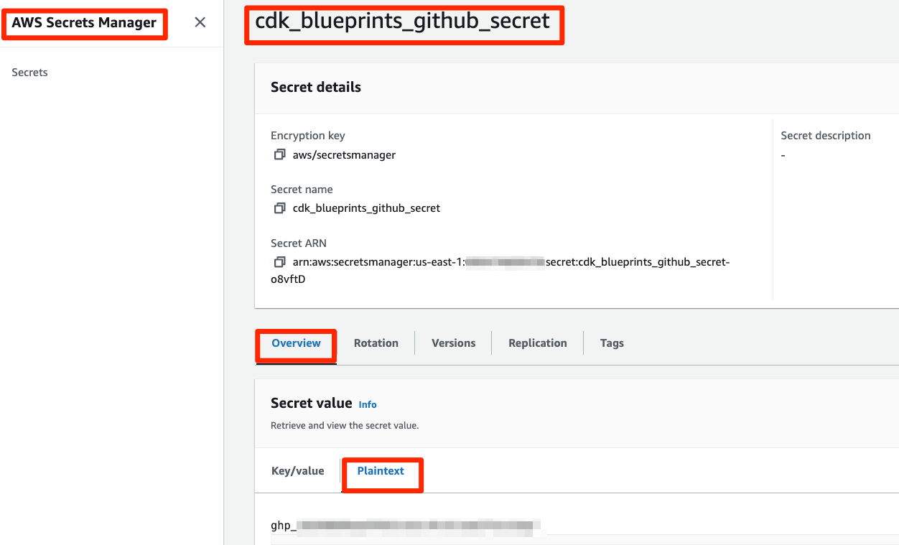
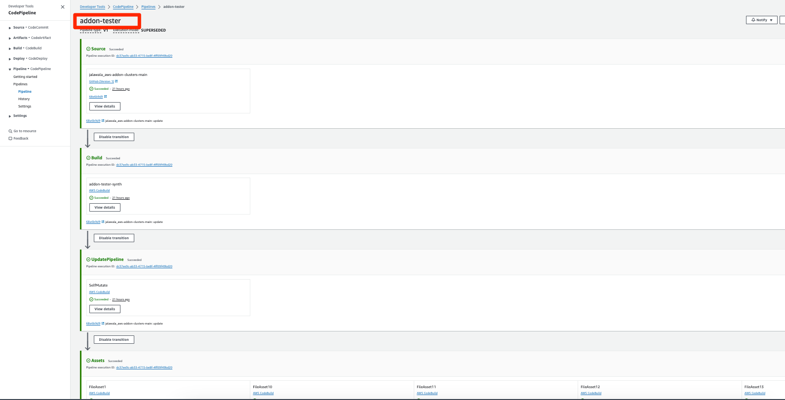
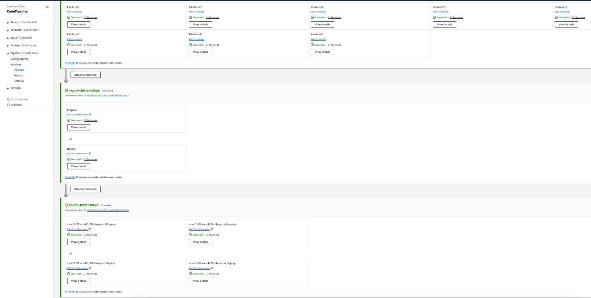
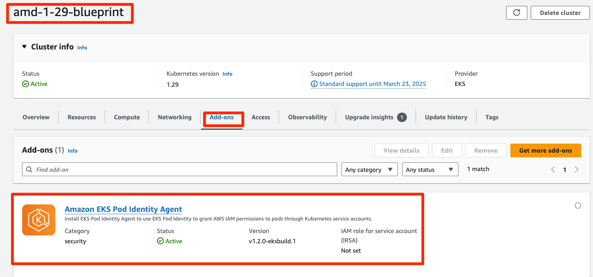
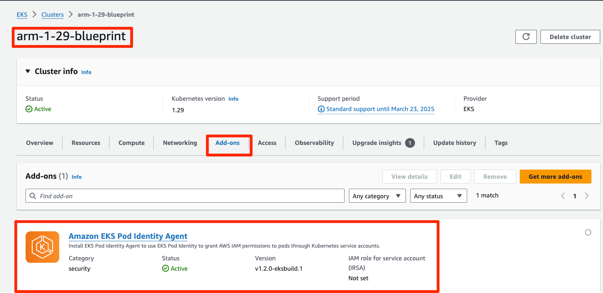

GitOps based Multi Cluster Addon and Apps Managament using Crossplane and ArgoCD¤
Objective¤
The objective of this pattern is to provide GitOps based lifecycle management of Amazon EKS Addons, Kubernetes Applications and Helm charts across various workload clusters using ArgoCD and Crossplane deployed in a Management Cluster. This helps platform and application teams to simplify the process of deploying Addos and Apps from a central Management Cluster. In this Solution, we use CDK to deploy AWS CodePipeline which monitors this platform repo and deploy the Management and Workload Clusters using CDK EKS Blueprints.
Architecture¤
Approach¤
This blueprint will include the following:
- AWS CodePipeline which deploy the Management and Workload Clusters
- A new Well-Architected EKS cluster
management-clusterand two workload EKS Clustersamd-1-29-blueprintandarm-1-29-blueprintin the region and account you specify. - Amazon VPC CNI add-on (VpcCni) into your cluster to support native VPC networking for Amazon EKS.
- The Management Cluster is deployed with the following Addons.
- Upbound Universal Crossplane Provider
- Upbound AWS Family Crossplane Provider
- Upbound AWS EKS Crossplane Provider
- Kubernetes Crossplane Provider
- Helm Crossplane Provider
- Secrets Store AddOn
- ArgoCD Addon
- The ArgoCD Addon is bootstrapped with git-ops which contains Crossplane Manifest files to deploy EKS Addons, Kubernetes Manifests and also Helm Charts.
GitOps confguration¤
For GitOps, the blueprint bootstrap the ArgoCD addon and points to the EKS Blueprints Workload sample repository.
Prerequisites¤
Ensure that you have installed the following tools on your machine.
Create a plain-text Amazon secret to hold a fine-grained GitHub access token for this repo in the desired region, and
set its name as a value to the GITHUB_SECRET environment variable. Default value is cdk_blueprints_github_secret.
WARNING: When switching the CDK between region, remember to replicate this secret!!!!
export ACCOUNT_ID=$(aws sts get-caller-identity --output text --query Account)
export AWS_REGION=$(curl -s 169.254.169.254/latest/dynamic/instance-identity/document | jq -r '.region')
export CDK_REPO_GITHUB_PAT_TOKEN=<set_token_here>
export CDK_REPO_AWS_SECRET_NAME="cdk_blueprints_github_secret"
aws secretsmanager create-secret --region $AWS_REGION \
--name $CDK_REPO_AWS_SECRET_NAME \
--description "GitHub Personal Access Token for CodePipeline to access GitHub account" \
--secret-string $CDK_REPO_GITHUB_PAT_TOKEN
The Secret will look like this in the AWS Console.

Deploy¤
- Clone the repository and install dependency packages. This repository contains CDK v2 code written in TypeScript.
git clone https://github.com/aws-samples/cdk-eks-blueprints-patterns.git
cd cdk-eks-blueprints-patterns
npm i
- Execute the commands below to bootstrap the AWS environment
cdk bootstrap aws://$ACCOUNT_ID/$AWS_REGION
- Run the following command from the root of this repository to deploy the pipeline stack:
make build
make list
make pattern aws-addon-clusters deploy
Cluster Access¤
View the CodePipeline¤


Create Kube context to access the management-cluster¤
Go to the CloudFormation Stack mgmt-cluster-stage-mgmt-cluster-stage-blueprint outputs and search for a key starting with mgmtclusterstageblueprintConfigCommand and copy it's value which an aws command to create a the kubecontext for the management-cluster
The example command looks like below.
aws eks update-kubeconfig --name management-cluster --region us-west-2 --role-arn arn:aws:iam::ACCOUNT_ID:role/mgmt-cluster-stage-mgmt-c-managementclusterAccessRo-XYSC5PKL8WnA
The output will look like below.
Updated context arn:aws:eks:us-west-2:ACCOUNT_ID:cluster/management-cluster in /Users/<user_name>/.kube/config
Set below environment variable to the above context
export MANAGEMENT_CLUSTER_CONTEXT="arn:aws:eks:${AWS_REGION}:${ACCOUNT_ID}:cluster/management-cluster"
echo "export MANAGEMENT_CLUSTER_CONTEXT=${MANAGEMENT_CLUSTER_CONTEXT}" >> ~/.bash_profile
management-cluster
kubectl --context $MANAGEMENT_CLUSTER_CONTEXT get node
The output will like below.
NAME STATUS ROLES AGE VERSION
ip-10-0-116-4.ec2.internal Ready <none> 6d8h v1.28.8-eks-ae9a62a
ip-10-0-175-104.ec2.internal Ready <none> 6d8h v1.28.8-eks-ae9a62a
Run below command to get list of Crossplane Providers deployed into the management-cluster
kubectl --context $MANAGEMENT_CLUSTER_CONTEXT get providers.pkg.crossplane.io
The output will like below.
NAME INSTALLED HEALTHY PACKAGE AGE
helm-provider True True xpkg.upbound.io/crossplane-contrib/provider-helm:v0.18.1 47h
kubernetes-provider True True xpkg.upbound.io/crossplane-contrib/provider-kubernetes:v0.13.0 25h
provider-aws-eks True True xpkg.upbound.io/upbound/provider-aws-eks:v1.1.0 8d
upbound-provider-family-aws True True xpkg.upbound.io/upbound/provider-family-aws:v1.4.0 8d
Run below command to get the Crossplane Providers pods to the management-cluster
kubectl --context $MANAGEMENT_CLUSTER_CONTEXT get pod -n upbound-system
The output will like below.
NAME READY STATUS RESTARTS AGE
crossplane-594b65bfdb-pgkxf 1/1 Running 0 6d8h
crossplane-rbac-manager-86c74cf5d-tjcw8 1/1 Running 0 6d8h
helm-provider-4d90a08b9ede-7c874b858b-pp26d 1/1 Running 0 47h
kubernetes-provider-a3cbbe355fa7-55846cfbfb-6tpcl 1/1 Running 0 25h
provider-aws-eks-23042d28ed58-66d9db8476-jr6mb 1/1 Running 0 6d8h
upbound-provider-family-aws-bac5d48bd353-64845bdcbc-4vpn6 1/1 Running 0 6d8h 8d
Run below command to get the ArgoCD pods deployed into the management-cluster
kubectl --context $MANAGEMENT_CLUSTER_CONTEXT get pod -n argocd
The output will like below.
NAME READY STATUS RESTARTS AGE
blueprints-addon-argocd-application-controller-0 1/1 Running 0 24h
blueprints-addon-argocd-applicationset-controller-7b78c7fc94ls9 1/1 Running 0 24h
blueprints-addon-argocd-dex-server-6cf94ddc54-dfhv7 1/1 Running 0 24h
blueprints-addon-argocd-notifications-controller-6f6b7d95cdd2tl 1/1 Running 0 24h
blueprints-addon-argocd-redis-b8dbc7dc6-h4bs8 1/1 Running 0 24h
blueprints-addon-argocd-repo-server-fd57dc686-zkbsm 1/1 Running 0 4h15m
blueprints-addon-argocd-server-84c8b597c9-98c95 1/1 Running 0 24h
Create Kube context to access the amd-1-29-blueprint¤
Go to the CloudFormation Stack amd-1-29-amd-1-29-blueprint outputs and search for a key starting with amd129blueprintConfigCommand and copy it's value which an aws command to create a the kubecontext for the amd-1-29-blueprint
The example command looks like below.
aws eks update-kubeconfig --name amd-1-29-blueprint --region us-west-2 --role-arn arn:aws:iam::ACCOUNT_ID:role/eks-connector-role
The output will look like below.
Added new context arn:aws:eks:us-west-2:ACCOUNT_ID:cluster/amd-1-29-blueprint to /Users/jalawala/.kube/config
Set below environment variable to the above context
export WORKLOAD_CLUSTER1_CONTEXT="arn:aws:eks:${AWS_REGION}:${ACCOUNT_ID}:cluster/amd-1-29-blueprint"
echo "export WORKLOAD_CLUSTER1_CONTEXT=${WORKLOAD_CLUSTER1_CONTEXT}" >> ~/.bash_profile
amd-1-29-blueprint
kubectl --context $WORKLOAD_CLUSTER1_CONTEXT get node
NAME STATUS ROLES AGE VERSION
ip-10-0-96-158.ec2.internal Ready <none> 6d9h v1.29.3-eks-ae9a62a
Create Kube context to access the arm-1-29-blueprint¤
Go to the CloudFormation Stack arm-1-29-arm-1-29-blueprint outputs and search for a key starting with arm129blueprintConfigCommand and copy it's value which an aws command to create a the kubecontext for the arm-1-29-blueprint
The example command looks like below.
aws eks update-kubeconfig --name arm-1-29-blueprint --region us-west-2 --role-arn arn:aws:iam::$ACCOUNT_ID:role/eks-connector-role
The output will look like below.
Added new context arn:aws:eks:us-west-2:ACCOUNT_ID:cluster/arm-1-29-blueprint to /Users/jalawala/.kube/config
Set below environment variable to the above context
export WORKLOAD_CLUSTER2_CONTEXT="arn:aws:eks:${AWS_REGION}:${ACCOUNT_ID}:cluster/arm-1-29-blueprint"
echo "export WORKLOAD_CLUSTER2_CONTEXT=${WORKLOAD_CLUSTER2_CONTEXT}" >> ~/.bash_profile
arm-1-29-blueprint
kubectl --context $WORKLOAD_CLUSTER2_CONTEXT get node
NAME STATUS ROLES AGE VERSION
ip-10-0-96-158.ec2.internal Ready <none> 6d9h v1.29.3-eks-ae9a62a
Update the Trust policy for the Upbound AWS EKS Provider IAM Role.¤
The IAM Role used for IRSA for the Upbound AWS EKS Provider Pod needs to be updated as below to allow Service Accounts for all Upbound AWS Service specific providers to assume the Role.
Go to the mgmt-cluster-stage-mgmt-cluster-stage-blueprint stack output tab and extract the role name from the providerawssaiamrole output.
export providerawssaiamrole=$(aws cloudformation describe-stacks \
--stack-name mgmt-cluster-stage-mgmt-cluster-stage-blueprint \
--query 'Stacks[].Outputs[?OutputKey==`providerawssaiamrole`].OutputValue' \
--output text | awk -F'/' '{print $2}')
echo $providerawssaiamrole
The output will look like below.
mgmt-cluster-stage-mgmt-c-mgmtclusterstageblueprint-I8cnZsnO37rA
Get the OIDC for the management-cluster value by running:
export OIDC_VAL=$(aws eks describe-cluster --name "management-cluster" --region "${AWS_REGION}" --query "cluster.identity.oidc.issuer" --output text | awk -F'/' '{print $5}')
echo $OIDC_VAL
The output will like below.
0F745A41ECA76297CBF070C032932033
Create the Updated Trust policy. Notice the * in provider-aws-* in the Conditions Section.
export IAM_ROLE_TRUST_POLICY="provider-aws-management-cluster-trust-policy.json"
cat > $IAM_ROLE_TRUST_POLICY <<EOF
{
"Version": "2012-10-17",
"Statement": [
{
"Effect": "Allow",
"Principal": {
"Federated": "arn:aws:iam::${ACCOUNT_ID}:oidc-provider/oidc.eks.${AWS_REGION}.amazonaws.com/id/${OIDC_VAL}"
},
"Action": "sts:AssumeRoleWithWebIdentity",
"Condition": {
"StringLike": {
"oidc.eks.${AWS_REGION}.amazonaws.com/id/${OIDC_VAL}:sub": "system:serviceaccount:upbound-system:provider-aws-*"
}
}
}
]
}
EOF
aws iam update-assume-role-policy --role-name $providerawssaiamrole --policy-document file://$IAM_ROLE_TRUST_POLICY
Add IAM permissions to eks-connector-role AWS Role¤
Both of the Workload EKS Clusters i.e. amd-1-29-blueprint and arm-1-29-blueprint are added a platform team IAM Role eks-connector-role with system:masters access using the AWS Auth Config Map.
The Upbound AWS EKS Provider Pod will use its IRSA IAM Role mgmt-cluster-stage-mgmt-c-mgmtclusterstageblueprint-I8cnZsnO37rA to assume the eks-connector-role AWS Role to gain access to the Workload Clusters. The sts:AssumeRole IAM permission is already being added to the IRSA Role during the Management Cluster creation process.
Since the IRSA Role will use eks-connector-role to create a Kubecontext object and deploy EKS Addons into the Workload clusters, the eks-connector-role Role needs eks:* IAM permissions. Note this IAM permissions can be made very granualar to provide least privileged access to Workload Clusters.
export EKS_ACCESS_IAM_POLICY="eks-access-iam.json"
export EKS_ACCESS_IAM_POLICY_FILE="eks-access-iam.json"
export IAM_ROLE_ARN="arn:aws:iam::${ACCOUNT_ID}:role/eks-connector-role"
cat > $EKS_ACCESS_IAM_POLICY_FILE <<EOF
{
"Version": "2012-10-17",
"Statement": [
{
"Effect": "Allow",
"Action": [
"eks:*"
],
"Resource": "*"
}
]
}
EOF
aws iam create-policy \
--policy-name $EKS_ACCESS_IAM_POLICY \
--policy-document file://$EKS_ACCESS_IAM_POLICY_FILE
aws iam attach-role-policy \
--policy-arn arn:aws:iam::${ACCOUNT_ID}:policy/$EKS_ACCESS_IAM_POLICY \
--role-name ${IAM_ROLE_ARN}
GitHub Access Token for the git-ops repo¤
In the git-ops repository, there are some ArgoCD Application configuration files, which in turn points to Crossplane Manifest files. These Crossplane Manifest files will be applied by ArgoCD in the Management Cluster to deploy EKS addons, Kubernetes Manifests and Helm charts into the workload clusters. To configure access to this repo for ArgoCD Repo Server, you need to create a GitHub token to access the git-ops repo. First create a plain-text Amazon secret github-token AWS Secret Manager, to hold a fine-grained GitHub access token for git-ops repo in and then create blueprints-secret of type SecretProviderClass in the Management Kubernetes Cluster.
export GIT_OPS_GITHUB_PAT_TOKEN=<set_token_here>
export GIT_OPS_AWS_SECRET_NAME="github-token"
aws secretsmanager create-secret --region $AWS_REGION \
--name $GIT_OPS_AWS_SECRET_NAME \
--description "GitHub Personal Access Token for ArgoCD to access Grossplane Manifests" \
--secret-string $GIT_OPS_GITHUB_PAT_TOKEN
cat > secret-store-argocd.yaml <<EOF
---
apiVersion: secrets-store.csi.x-k8s.io/v1
kind: SecretProviderClass
metadata:
name: blueprints-secret
namespace: argocd
spec:
provider: aws
parameters:
objects: |
- objectName: "github-token"
objectType: "secretsmanager"
EOF
kubectl --context $MANAGEMENT_CLUSTER_CONTEXT apply -f secret-store-argocd.yaml
Test¤
Install the ArgoCD ALI¤
In the ArgoCD CLI as per the docs
Get the ArgoCD Admin password using below command.
kubectl --context $MANAGEMENT_CLUSTER_CONTEXT -n argocd get secret argocd-initial-admin-secret -o jsonpath="{.data.password}" | base64 -d; echo
Open a new Terminal and Run a local proxy server for the ArgoCD Server.
kubectl --context $MANAGEMENT_CLUSTER_CONTEXT port-forward svc/blueprints-addon-argocd-server -n argocd 8080:443
argocd login localhost:8080 --username admin --password <admin_password>
Add EKS Cluster to ArgoCD.
argocd cluster add $MANAGEMENT_CLUSTER_CONTEXT
WARNING: This will create a service account `argocd-manager` on the cluster referenced by context `arn:aws:eks:us-west-2:ACCOUNT_ID:cluster/management-cluster` with full cluster level privileges. Do you want to continue [y/N]? y
INFO[0004] ServiceAccount "argocd-manager" already exists in namespace "kube-system"
INFO[0004] ClusterRole "argocd-manager-role" updated
INFO[0005] ClusterRoleBinding "argocd-manager-role-binding" updated
Cluster 'https://0F745A41ECA76297CBF070C032932033.sk1.us-west-2.eks.amazonaws.com' added
Run the below command to get the list of ArgoCD Applications.
argocd app list
The output will look like below.
NAME CLUSTER NAMESPACE PROJECT STATUS HEALTH SYNCPOLICY CONDITIONS REPO PATH TARGET
argocd/bootstrap-apps https://kubernetes.default.svc argocd default Synced Healthy Auto-Prune <none> https://github.com/aws-samples/eks-blueprints-workloads ./common/testingClusters main
argocd/cluster1 https://kubernetes.default.svc argocd default Synced Healthy Auto-Prune <none> https://github.com/aws-samples/eks-blueprints-workloads ./clusters/cluster1 main
argocd/cluster2 https://kubernetes.default.svc argocd default Synced Healthy Auto-Prune <none> https://github.com/aws-samples/eks-blueprints-workloads ./clusters/cluster2 main
Validate EKS Addons deployment in Workload Clusters¤
Run the below command to get the list of Crossplane AWS Provder Objects deployed in the Management Cluster.
kubectl --context $MANAGEMENT_CLUSTER_CONTEXT get providerconfigs.aws.upbound.io
The output will look like below.
NAME AGE
provider-config-aws-amd-1-29-blueprint 4h52m
provider-config-aws-arm-1-29-blueprint 4h52m
Run the below command to get the list of Crossplane AWS EKS Provder Addon Objects deployed in the Management Cluster.
kubectl --context $MANAGEMENT_CLUSTER_CONTEXT get addons.eks.aws.upbound.io
The output will look like below.
NAME READY SYNCED EXTERNAL-NAME AGE
addon-eks-pod-identity-agent-amd-1-29 True True amd-1-29-blueprint:eks-pod-identity-agent 4h15m
addon-eks-pod-identity-agent-arm-1-29 True True arm-1-29-blueprint:eks-pod-identity-agent 4h15m
Go to the Workload EKS Clusters and Ensure that EKS Addon is deployed successfully.


Validate Kubernetes Manifests deployment in Workload Clusters¤
Run the below command to get the list of Crossplane Kubernetes Provder Objects deployed in the Management Cluster.
kubectl --context $MANAGEMENT_CLUSTER_CONTEXT get providerconfigs.kubernetes.crossplane.io
The output will look like below.
NAME AGE
provider-config-k8s-amd-1-29-blueprint 4h31m
provider-config-k8s-arm-1-29-blueprint 4h40m
Run the below command to get the list of Namespaces in the Workload Cluster amd-1-29-blueprint
kubectl --context $WORKLOAD_CLUSTER1_CONTEXT get ns
The output will look like below.
NAME STATUS AGE
default Active 8d
external-secrets Active 8d
kube-node-lease Active 8d
kube-public Active 8d
kube-system Active 8d
test-namespace-amd-1-29-blueprint Active 4h9m
Run the below command to get the list of Namespaces in the Workload Cluster arm-1-29-blueprint
kubectl --context $WORKLOAD_CLUSTER2_CONTEXT get ns
The output will look like below.
NAME STATUS AGE
default Active 8d
external-secrets Active 8d
kube-node-lease Active 8d
kube-public Active 8d
kube-system Active 8d
test-namespace-arm-1-29-blueprint Active 4h9m
Validate Helm Chart deployment in Workload Clusters¤
Run the below command to get the list of Crossplane Kubernetes Provder Objects deployed in the Management Cluster.
kubectl --context $MANAGEMENT_CLUSTER_CONTEXT get providerconfigs.helm.crossplane.io
The output will look like below.
NAME AGE
provider-config-helm-amd-1-29-blueprint 4h37m
provider-config-helm-arm-1-29-blueprint 4h46m
Run the below command to get the list of helm charts in the Workload Cluster amd-1-29-blueprint
helm --kube-context $WORKLOAD_CLUSTER1_CONTEXT list -A
The output will look like below.
NAME NAMESPACE REVISION UPDATED STATUS CHART APP VERSION
blueprints-addon-external-secrets external-secrets 1 2024-05-07 05:25:31.465715836 +0000 UTC deployed external-secrets-0.9.9 v0.9.9
test-helm-amd-1-29-blueprint default 1 2024-05-15 06:39:17.325950143 +0000 UTC deployed nginx-17.0.1 1.26.0
Run the below command to get the list of Helm Charts in the Workload Cluster arm-1-29-blueprint
helm --kube-context $WORKLOAD_CLUSTER2_CONTEXT list -A
The output will look like below.
NAME NAMESPACE REVISION UPDATED STATUS CHART APP VERSION
blueprints-addon-external-secrets external-secrets 1 2024-05-07 05:26:52.028907405 +0000 UTC deployed external-secrets-0.9.9 v0.9.9
test-helm-arm-1-29-blueprint default 1 2024-05-15 06:39:17.222351682 +0000 UTC deployed nginx-17.0.1 1.26.0